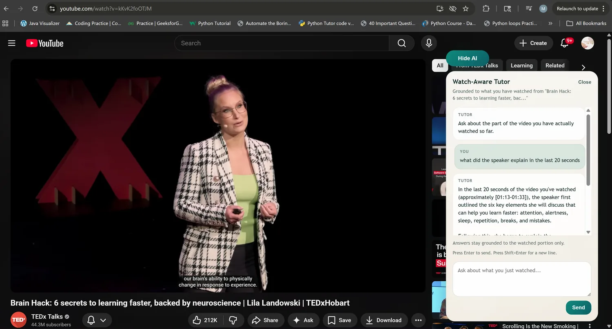

AI Watch: Watch-Aware Tutor
A Chrome extension that tutors on the video you're watching and cites only the parts you have actually watched. The interesting problem turned out to be concurrency, not prompting.
The premise
You're forty minutes into a lecture and something doesn't land. You ask about it. A generic assistant will happily answer using the part of the video you haven't reached yet, which is either a spoiler or, in a lecture, an explanation that depends on machinery you haven't been given.
So the product promise is narrower than "chatbot on a video": answer from what this person has actually watched. That promise is what generates every hard problem below. It turns a prompting exercise into a state-tracking problem across four process boundaries, in a runtime that kills your worker whenever it likes.

The bug worth the whole project
Answering a question is a chain of awaits: read the stored session, get the tab's URL, resolve a transcript, call the model, write the answer back. YouTube is a single-page app. Every one of those awaits is a window in which the user can navigate to a different video without a page load, and the worker never notices.
The failure mode is exact and it is worse than a wrong answer: one video's transcript answers another video's question, with citations, confidently.
The fix is unglamorous and it is the right one. Tab URL, video id and session id are re-read after every await, all five of them, and any mismatch aborts the request rather than returning it. The client re-checks identity a third time when the response arrives, because by then the page may have moved again.
Mutations are serialized per tab through a promise-tail queue, so reads, writes and broadcasts can't interleave within a tab while different tabs still run in parallel. In-flight requests go through a registry with one abort controller each and duplicate-id rejection. The queue's tail cleanup only deletes if the tail is still the current one, the small detail that stops the cleanup from clobbering a request that arrived while it was running.
What "actually watched" means
Watched time is accumulated online from a 250ms sampler rather than the browser's
timeupdate event, which fires anywhere from four to sixty-six times a second and is
a terrible thing to hang a state machine on.
The subtle part is telling playback apart from a seek. A fixed delta gets it wrong the moment someone watches at 1.5×, or the timer jitters under load. The threshold adapts to elapsed wall time and the current playback rate, coalesces intervals within a third of a second, and drops anything under fifty milliseconds as noise.
Ranking the eligible chunks is a keyword scorer with a thirty-word stop set: two points per keyword hit, one for a repeat, four for containing the full question as a substring, ties broken by timestamp. No TF-IDF library, no embeddings. For a few hundred transcript chunks it is fast, completely explainable, and has no model in it, which matters, because the ranker is what decides the evidence the model is allowed to see.
Treating the model's output as untrusted input
Prompt injection gets the attention, and it's handled: untrusted fields are HTML-escaped and wrapped in named tags so the structure itself contains them, rather than relying on an instruction not to obey the transcript.
The less common half is the return direction. Citations that come back from the model are re-verified server-side against the watched chunks and the watched ranges. The model cannot fabricate a timestamp for content the user never reached, not because it was asked not to, but because a fabricated citation fails the check and is dropped. For two of the three providers the model isn't even asked for citations; they're attached deterministically from the ranker.
The rest of the security surface
- A message from a content script is authorized only if the sender id matches the extension, the frame id is zero (a compromised iframe can't speak for the page), the tab id is a safe integer, the origin is exactly YouTube, and the URL's video id matches the one being claimed. All five conditions, simultaneously.
- Origin checking rejects the empty-credential trick,
https://www.youtube.com@evil.com, which a naive prefix comparison accepts. - API keys live in local storage, never sync storage, because sync uploads to Google, with the reason written in a comment next to the line.
- A recursive scan rejects any payload carrying a key that looks like a token, password, cookie or secret before it can cross the native-messaging boundary. Structural, not vigilant.
- Two
innerHTMLuses in the entire codebase: a static stylesheet and clearing a node. Everything else istextContent. The UI lives in a closed shadow root and submissions require a trusted event, so the page can't synthesize a question on your behalf.
Parsing what YouTube actually gives you
There is no clean transcript API. Captions arrive in three formats, hand-parsed, with a negotiation chain that falls back through five of them. Two of the XML variants disagree about both attribute names and units: seconds in one, milliseconds in the other.
The player response object is embedded in the page HTML, where no regex will safely find its end, so it's extracted with a brace-matching scanner that tracks string and escape state and is bounded to two megabytes. When captions don't exist at all, there's a three-tier fallback: the page's caption API, then the browser's text tracks, then scraping the visible subtitle overlay and synthesizing timestamps from the video's current time.
That last tier is ugly. It is also the difference between working and not working on videos that have no caption track, and I'd rather have the ugly tier than the excuse.
What I'd tell you in an interview
- There is no end-to-end testing. 149 unit tests pass, and exactly one integration test exists. Chrome 116 is the declared target but real-browser behaviour is unverified, so I won't say "tested in Chrome."
- Roughly 2,200 lines of content-script code are effectively untested because of how the test glob resolves. It's the layer I'd cover first.
- Streaming is specified but not wired. The event type exists and one provider advertises it, but every consumer collects the full response. The blocker is real: request/response messaging needs a long-lived port for true streaming, and it's named in a comment rather than papered over.
- The manifest requests broad optional host permissions. I'd rather discuss that than have it discovered.
- No database, no deployment, no auth system, no users.
- Ten commits over four months, seven of them on one day. The history is a bad proxy for the work here.